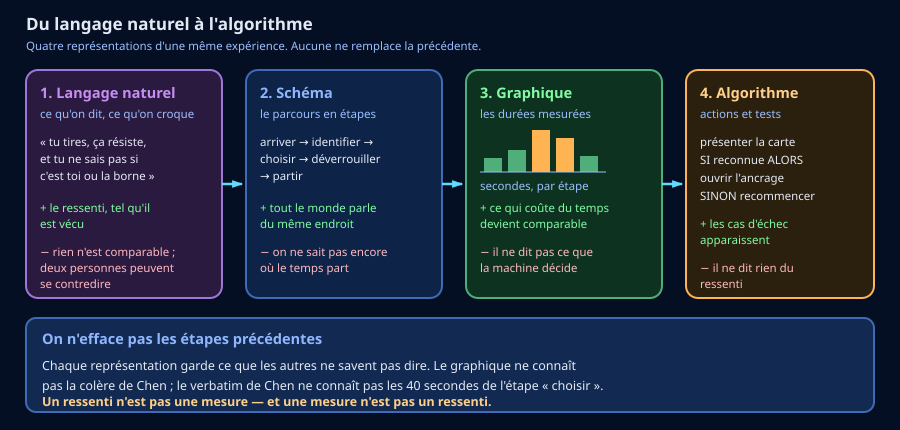
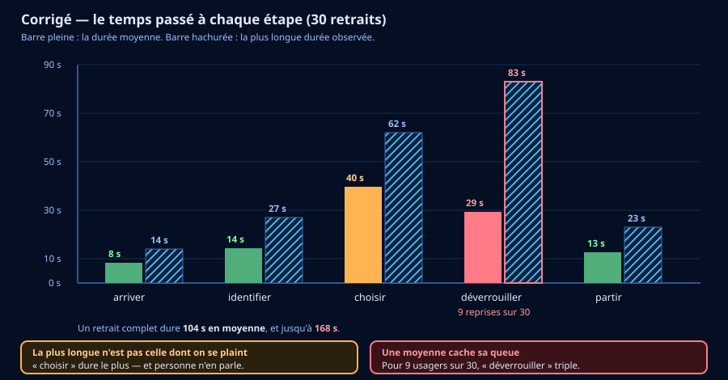
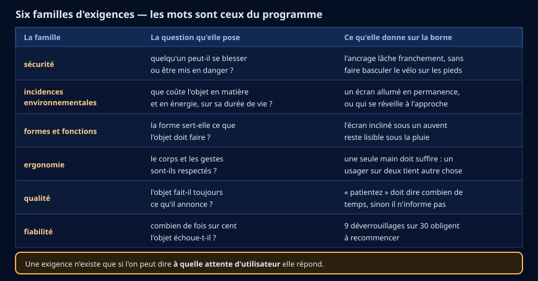

🎫 Billet d'entrée — je vérifie mes outils de 5e (5 min, sans note)
Trois questions sur ce que tu as travaillé l'an dernier. Aucune note : c'est un aiguillage.
🎒 Je révise en 3 minutes
Un interacteur est extérieur à l'objet et entre en relation avec lui : une personne, un autre objet, une condition. Un choix de conception est la décision qui explique une forme — la question qui l'ouvre est « pourquoi pas autrement ? »
Une moyenne décrit le milieu d'une série. Elle ne dit rien de ce qui arrive aux cas les plus défavorables : deux séries très différentes peuvent avoir la même moyenne. Cette idée-là va servir toute la séquence.
👂 Activité 1 — Écouter, puis schématiser (~40 min)
Le programme te demande de partir du langage naturel : ce que les gens disent, avec
leurs mots. Douze usagers ont été interrogés devant la borne de Hangzhou. Leurs réponses sont dans
📥 verbatims_usagers_hangzhou_simules.csv.

a) Lire des verbatims sans les trahir
b) Découper le parcours
Pour comparer ce que douze personnes racontent, il faut un découpage commun : c'est ce qu'apporte le schéma. Le service technique en propose cinq étapes : arriver, identifier, choisir, déverrouiller, partir.
c) Ton relevé
🪜 Version étayée — des phrases à compléter
La structure est donnée ; le contenu reste à trouver dans les verbatims.
- « 1. arriver — ressenti : ____ — preuve : V__ »
- « 2. identifier — ressenti : ____ — preuve : V__ »
- « 3. choisir — ressenti : ____ — preuve : V__ »
- « 4. déverrouiller — ressenti : ____ — preuve : V__ »
- « 5. partir — ressenti : ____ — preuve : V__ »
💡 Aide de niveau 1
Prends les verbatims un par un et pose-toi une seule question : à quel moment du
retrait cette personne se trouve-t-elle ? La colonne etape_concernee du
fichier te donne la réponse si tu bloques.
💡💡 Aide de niveau 2
Un ressenti s'écrit avec un mot d'émotion ou de difficulté : hésitation, agacement, fatigue, confusion, incertitude, soulagement. Il ne s'écrit pas avec un chiffre — les chiffres viennent à la séance 2.
Attention à l'étape choisir : deux usagers disent le contraire l'un de l'autre. Ce n'est pas un problème à résoudre, c'est un résultat à écrire.
📖 Correction complète
Un relevé possible (les ressentis peuvent se dire avec d'autres mots, les preuves non) :
- arriver — gêne, fatigue, confusion : l'écran est illisible sous la pluie (V04), il faut se pencher (V07), les pictogrammes changent d'une borne à l'autre (V10).
- identifier — hésitation : on ne sait pas où poser sa carte (V02), et l'aisance de Xu ne vaut que pour elle (V08).
- choisir — partagé : découragement pour Wang (V03), satisfaction pour Ma (V09). Les deux sont vrais.
- déverrouiller — agacement, perte de confiance, incertitude : on ne sait pas si la faute vient de soi ou de la borne (V01), il faut recommencer (V05), et surtout on ignore combien de temps ça va durer (V12).
- partir — soulagement, mais embarras quand on n'a qu'une main libre (V06, V11).
Wang contre Ma : rien à trancher. Un même objet ne produit pas la même expérience selon qui l'utilise — Ma est livreur, il cherche la batterie ; Wang vient une fois par semaine et ne sait pas quoi regarder. Un relevé honnête écrit les deux.
Feng est le verbatim le plus précieux de la série : il sépare la durée de l'incertitude. Ce n'est pas la même chose d'attendre trente secondes en le sachant, et d'attendre trente secondes sans le savoir. La séance 3 en tirera une exigence.
🧠 À retenir : on part de ce que les gens disent, et on cherche à quel moment ils le disent. Le schéma ne remplace pas les mots : il les range.
⚠️ Piège classique : vouloir trancher entre deux usagers qui se contredisent. Deux expériences opposées sur le même objet, c'est un résultat.
Critère de réussite : tes cinq étapes sont nommées, chacune porte un ressenti et le code d'un verbatim qui le prouve.
📊 Activité 2 — Mesurer, et tracer (~30 min)
Trente retraits ont été chronométrés, étape par étape :
📥 donnees_parcours_borne_hangzhou_simulees.csv — 150 lignes, une par étape et par
retrait, avec une colonne reprise_necessaire.
Ce que tu dois produire : un diagramme en barres, une barre par étape. Trace deux barres par étape : la durée moyenne et la durée la plus longue observée. C'est cette seconde barre qui fait tout l'intérêt du graphique.
Ton graphique, et ce qu'on y lit
🪜 Version étayée — des phrases à compléter
- « arriver : ____ s en moyenne, ____ s au maximum. » (et ainsi pour les cinq)
- « Ce que le graphique montre : l'étape ____ est la plus longue en moyenne, mais c'est l'étape ____ qui a le plus grand écart entre la moyenne et le maximum, parce que ____. »
- « Ce que le graphique ne montre pas : ____. »
💡 Aide de niveau 1
Au tableur : filtre la colonne etape, puis utilise MOYENNE et
MAX sur la colonne duree_s. Arrondis à la seconde.
💡💡 Aide de niveau 2
Regarde l'écart moyenne → maximum de chaque étape. Quatre étapes ont un écart
modeste. Une seule explose — et c'est celle dont parlent trois verbatims sur douze. La colonne
reprise_necessaire explique pourquoi.
📖 Correction complète — avec le graphique attendu

Les valeurs (arrondies à la seconde) : arriver 8 s / 14 s · identifier 14 s / 27 s · choisir 40 s / 62 s · déverrouiller 29 s / 83 s · partir 13 s / 23 s. Un retrait complet : 104 s en moyenne, jusqu'à 168 s.
Première lecture : la plus longue n'est pas celle dont on se plaint. L'étape « choisir » est la plus longue en moyenne (40 s) — et aucun verbatim ne s'en plaint vraiment ; Ma la trouve même pratique. Si l'on n'avait que le chronomètre, on corrigerait la mauvaise étape.
Seconde lecture : une moyenne cache sa queue. « Déverrouiller » ne fait que 29 s de moyenne, mais monte à 83 s parce que 9 retraits sur 30 ont demandé une reprise. Pour ces neuf usagers-là, l'étape triple. Et ce sont eux qui écrivent au service client : on ne se plaint pas de la moyenne, on se plaint de ce qu'on a vécu.
Ce que le graphique ne montre pas : le ressenti. Il ne dit pas que Feng supporterait l'attente s'il en connaissait la durée. Il ne dit pas non plus ce que la borne décide pendant ces 83 secondes — c'est ce que l'activité 3 va écrire.
🧠 À retenir : une moyenne décrit le milieu, et personne ne vit le milieu. Trace toujours le pire cas à côté.
⚠️ Piège classique : conclure d'un graphique de moyennes qu'il faut corriger l'étape la plus haute. Ici, ce serait corriger « choisir » — dont personne ne se plaint.
🔀 Activité 3 — Écrire l'algorithme du parcours (~25 min)
👥 Qui fait quoi — et quand on échange
Deux rôles seulement, et on échange à la moitié du temps. Un rôle est un tour, pas une étiquette.
- Le pilote tient l'outil — le clavier, le capteur, le tableur. Il exécute ; il ne décide pas seul.
- Le vérificateur relit chaque nombre et chaque unité avant qu'on les écrive. Il a le droit d'arrêter le groupe.
Si vous êtes trois ou quatre
- Le scribe écrit la trace commune — et note aussi ce que vous n'avez pas su faire.
- Le porte-parole explique à la classe. Il ne parle qu'avec ce que le scribe a écrit : si la trace ne suffit pas, c'est la trace qu'il faut reprendre.
| Rôle | 1re moitié | 2e moitié |
|---|---|---|
| Pilote | ||
| Vérificateur |
À recopier à chaque séance. Si personne ne change de rôle, c'est toujours le même qui apprend à tenir le clavier — et ce n'est pas celui qui en avait le plus besoin.
Le graphique dit combien de temps. Il ne dit pas ce que la machine décide. Pour cela, il faut écrire le parcours comme une suite d'actions et de tests : c'est un algorigramme.
Ton algorigramme
🪜 Version étayée — des phrases à compléter
- « DÉBUT — l'usager a choisi son vélo »
- « ACTION : ____ »
- « TEST : ____ ? — si OUI ____ — si NON ____ »
- « TEST : ____ ? — si OUI ____ — si NON ____ »
- « REPRISE : retour à l'étape ____ »
- « FIN : ____ (réussite) ou ____ (échec annoncé à l'usager) »
💡 Aide de niveau 1
Repars du verbatim de Chen : « tu ne sais pas si c'est toi ou la borne ». Ton algorigramme doit contenir le test qui répond à cette question — et l'action qui le dit à l'usager.
💡💡 Aide de niveau 2
Deux tests suffisent : « le point d'ancrage s'est-il ouvert ? » et « est-ce la troisième tentative ? ». Le second est celui qu'on oublie : sans lui, la reprise tourne en boucle et l'usager n'a aucune sortie.
Une boucle sans sortie d'échec, c'est exactement ce que Sun a vécu : « j'ai recommencé trois fois ».
📖 Correction complète
Un algorigramme correct :
- DÉBUT — l'usager a choisi son vélo.
- ACTION — la borne commande l'ouverture du point d'ancrage, et affiche le temps restant.
- TEST — « le point d'ancrage s'est-il ouvert en moins de 5 s ? » Si oui → aller à 6. Si non → aller à 4.
- ACTION — la borne annonce ce qui bloque (« ancrage bloqué, ne tirez pas ») et propose de réessayer.
- TEST — « est-ce la troisième tentative ? » Si non → reprise, retour à 2. Si oui → FIN (échec) : la borne propose un autre vélo et signale l'ancrage au service technique.
- FIN (réussite) — l'usager sort le vélo.
La sortie d'échec est le cœur de l'exercice. Sans elle, l'algorithme boucle : l'usager réessaie indéfiniment, exactement comme Sun. Un test dont la sortie « non » n'est pas traitée n'est pas un test, c'est un vœu.
L'étape 4 est ce que Chen réclamait sans le savoir : non pas que ça aille plus vite, mais que la machine dise ce qui se passe. Et l'affichage du temps restant, à l'étape 2, est ce que Feng réclamait. Deux verbatims deviennent deux cases.
🧠 À retenir : un test a toujours deux sorties, et la sortie « non » doit mener quelque part. Une reprise sans sortie d'échec est une boucle.
⚠️ Piège classique : dessiner le parcours quand tout se passe bien. L'algorigramme sert précisément à ce qui se passe quand ça rate.
📐 Activité 4 — Remonter aux exigences (~45 min)
Tu sais maintenant ce que vivent les usagers, où part le temps, et ce que la borne décide. Il reste le geste qui transforme tout cela en cahier des charges : nommer les exigences.
D'abord les contraintes : le diagramme pieuvre d'un autre objet
Avant d'écrire des exigences, les concepteurs font le tour de ce qui entoure l'objet : chaque interacteur impose une condition. Entraîne-toi sur un autre objet, le système d'arrosage connecté d'un jardin partagé, avec son diagramme des interacteurs extérieurs — le diagramme pieuvre. Un exercice, environ dix minutes ; il se vérifie tout seul et a sa correction complète.
📘 Le cours — ce qu'il faut savoir
Du diagramme pieuvre aux contraintes
- La fonction principale (FP) relie deux interacteurs en passant par l'objet : c'est le service rendu.
- Chaque fonction contrainte (FC) relie l'objet à un seul interacteur : c'est une condition à respecter. Devant chaque bulle, on se demande : « quelle condition cet interacteur impose-t-il à l'objet ? »
- Un même interacteur peut imposer plusieurs contraintes ; un interacteur oublié, c'est une contrainte que personne n'écrira.
Le cahier des charges fonctionnel
- Le cahier des charges fonctionnel (CdCF) met par écrit ce que le client attend de l'objet, avant de chercher des solutions. Il rassemble l'expression du besoin, le diagramme pieuvre et le tableau des fonctions.
- Le tableau a cinq colonnes : Fonction (FP1, FC1…) · Désignation (la phrase, verbe à l'infinitif) · Critère · Niveau · Flexibilité.
Critère, niveau, flexibilité
- Le critère est ce que l'on observe ou mesure pour savoir si la fonction est remplie : un volume d'eau, une durée, un indice de protection. Il a souvent une unité.
- Le niveau est la valeur à atteindre : « 10 L par jour », « IPX4 au moins », « en moins de 2 min ». Il peut aussi être une qualité : « couleur : vert ».
- La flexibilité dit l'écart que le client accepte autour du niveau. Elle s'écrit soit comme une marge chiffrée (« ± 1 L », « au plus », « au moins »), soit par une classe :
| Classe | Flexibilité | Le niveau est… | Ce que dit le client |
|---|---|---|---|
| F0 | nulle | impératif | « Pas question d'autre chose. » |
| F1 | faible | peu négociable | « À la rigueur, mais seulement si… » |
| F2 | moyenne | négociable | « Un peu plus ou un peu moins, ça ira. » |
| F3 | forte | très négociable | « N'importe quelle valeur me va. » |
D'où vient le niveau
- D'une norme (un texte officiel, le même pour tous les fabricants : les codes IP), d'un label (une qualité garantie : l'économie d'eau), d'une certification, ou de la demande du client écrite dans le cahier des charges.
Les erreurs à éviter
- Écrire une solution à la place d'un critère : « une électrovanne » n'est pas un critère, « le volume d'eau par jour » en est un.
- Écrire un niveau sans unité, ou un critère qui ne se mesure pas (« bien », « joli »).
- Choisir la flexibilité d'après l'importance de la fonction : elle dépend de l'écart accepté par le client.
- Mettre une norme dans une bulle du diagramme : c'est une exigence, qui fixe un niveau.
Le cours complet, avec les schémas et les mots : la synthèse.
Exercice 1 — Le service rendu et les contraintes
📖 Les mots de cet exercice
- fonction principale (FP)
- le service que l'objet rend : elle relie deux interacteurs en passant par l'objet.
- fonction contrainte (FC)
- une condition que l'objet doit respecter pour s'adapter à un interacteur.
- cuve
- un grand réservoir ; ici, il recueille l'eau de pluie du toit.
📝 Ce que montre le schéma, en mots
Au centre, le système d'arrosage. Six interacteurs autour : la gardienne (un usager), les plantes (l'environnement), la cuve d'eau de pluie (un autre objet), la pluie et le soleil (l'environnement), le smartphone (un autre objet), l'heure d'arrosage choisie (une donnée).
Le trait 1 est une courbe qui part de la gardienne, passe par le système et arrive aux plantes. Les traits 2 à 6 sont droits et relient le système à un seul interacteur : 2 à la pluie et au soleil, 3 à la cuve, 4 au smartphone, 5 à la gardienne, 6 à l'heure d'arrosage choisie.
Le jardin partagé du collège s'équipe d'un système d'arrosage connecté : il arrose les plantes à l'heure choisie, avec l'eau d'une cuve qui recueille la pluie, et envoie des nouvelles sur le smartphone de la gardienne, Mme Joseph. Voici son diagramme des interacteurs extérieurs — son diagramme pieuvre.
Dans un diagramme pieuvre, on trace deux sortes de traits. Une fonction principale (FP) relie deux interacteurs en passant par l'objet : c'est le service rendu. Une fonction contrainte (FC) relie l'objet à un seul interacteur : c'est une condition que l'objet doit respecter.
Dis pour chaque trait s'il est une FP ou une FC, puis choisis la phrase des traits 2, 3 et 4.
✅ Tu as réussi si… neuf réponses justes ; tu sais dire pourquoi le trait 1 passe par deux interacteurs.
💡 Aide 1 — pour démarrer
Compte les interacteurs que chaque trait touche. Deux → FP. Un seul → FC. Pour la phrase, regarde vers quelle bulle va le trait.
💡 Aide 2 — le raisonnement pas à pas
Trait 1 → gardienne + plantes → deux → FP → c'est le service : arroser à la place de la gardienne.
Traits 2 à 6 → un seul interacteur chacun → FC → ce sont des conditions.
La phrase « permettre à la gardienne d'arroser… » est celle du trait 1 : elle ne va avec aucun des traits 2, 3, 4.
🪜 Version étayée : des débuts de phrase pour t'aider
- Dans cette nouvelle situation, je pose la même question que dans l'aide 2 : …
- Ma réponse : … parce que …
🔍 Correction de l'exercice jumeau
A touche deux interacteurs (l'usager, la trottinette) → FP : recharger la trottinette de l'usager. B touche un seul interacteur → FC : se brancher sur le réseau électrique.🔍 La correction complète, et pourquoi
📌 À retenir : la fonction principale (FP) relie deux interacteurs en passant par l'objet : c'est le service rendu. Une fonction contrainte (FC) relie l'objet à un seul interacteur : c'est une condition.
⚠ Le piège classique : croire qu'un interacteur ne peut avoir qu'un trait : la gardienne est dans la FP et dans une FC.
🐙 Ces exercices viennent de l'atelier de 4e « Le diagramme des interacteurs extérieurs » : ce que tu fais ici s'y retrouve, avec le cahier des charges avec la flexibilité, les plaintes des usagers, et le QCM de l'atelier.
Le programme en nomme six familles. Ce sont ses mots, pas les nôtres : sécurité, incidences environnementales, formes et fonctions, ergonomie, qualité, fiabilité.

Ton cahier des charges
🪜 Version étayée — des phrases à compléter
- « La borne doit ____. Famille : ____. Elle répond à l'attente de ____ (V__), qui disait ____. »
- « La borne doit ____. Famille : ____. Elle répond à ____ (V__). »
- « La borne doit ____. Famille : ____. Elle répond à ____ (V__). »
- « La borne doit ____. Famille : ____. Elle répond à ____ (V__). »
💡 Aide de niveau 1
Reprends ton relevé de l'activité 1 : chaque ressenti mal vécu appelle une exigence. Pars du verbatim, et demande-toi : qu'est-ce que la borne devrait garantir pour que cette personne n'ait plus à dire ça ?
💡💡 Aide de niveau 2
Une exigence se vérifie : elle contient si possible un nombre (« au moins 98 fois sur 100 », « en moins de 5 s », « d'une seule main »). Sans quoi personne ne pourra dire si elle est tenue.
Et une exigence n'est pas une solution : « afficher le temps restant » est une exigence, « installer un écran OLED » est un choix de matériel.
📖 Correction complète
Quatre exigences possibles (d'autres sont recevables si elles tiennent les trois exigences de forme : attendu, famille, attente d'usager) :
- Le déverrouillage doit réussir au moins 98 fois sur 100. — Fiabilité. Répond à Chen (V01) et Sun (V05) : aujourd'hui, c'est 21 fois sur 30 seulement.
- Pendant une attente, la borne doit afficher le temps restant, et annoncer la cause en cas d'échec. — Qualité. Répond à Feng (V12), qui ne supporte pas l'incertitude, et à Chen (V01), qui ne sait pas d'où vient le blocage.
- Le retrait doit pouvoir se faire d'une seule main. — Ergonomie. Répond à Deng (V11), qui tient son enfant.
- L'écran doit rester lisible sous la pluie et sans se pencher. — Formes et fonctions (et ergonomie). Répond à Zhao (V04) et Wu (V07).
Une cinquième, souvent trouvée : l'écran ne s'allume qu'à l'approche — incidences environnementales. Elle ne vient d'aucun verbatim, et c'est normal : les usagers ne réclament pas ce qui ne les gêne pas. Certaines exigences viennent d'ailleurs que des attentes exprimées.
Ce qui n'est pas une exigence : « installer un lecteur plus rapide », « changer de fournisseur », « mettre un auvent ». Ce sont des solutions. Une exigence dit ce qu'il faut obtenir ; la solution dira comment. Les confondre, c'est décider avant d'avoir cherché.
🧠 À retenir : une exigence dit ce qu'il faut obtenir, se vérifie, et nomme l'attente à laquelle elle répond. Sinon, c'est une solution déguisée.
⚠️ Piège classique : écrire la solution à la place de l'exigence. « Mettre un auvent » répond déjà à la question ; « rester lisible sous la pluie » la pose.
Critère de réussite : quatre exigences, au moins trois familles du programme, et chacune reliée à un verbatim.
🎁 Bonus (facultatif — hors parcours obligatoire)
1. Interroge trois personnes sur un objet que tu utilises tous les jours au collège — un portail, un distributeur, un casier. Note leurs mots exacts, sans les reformuler. Combien d'étapes leur parcours compte-t-il ?
2. Chronomètre dix fois une même étape de cet objet. Compare la moyenne et le pire cas. L'écart te surprend-il ?
3. Écris une exigence pour cet objet, dans l'une des six familles du programme, et dis à quelle attente elle répond.
📖 Corrigé du Bonus — un exemple entièrement traité
L'objet pris ici : le distributeur de boissons du hall. Ton objet sera différent ; c'est la démarche qui doit se ressembler.
1. Les mots exacts de trois personnes (relevés sans les reformuler) :
- « Il rend jamais la monnaie, alors je prends toujours une pièce en trop, au cas où. »
- « Le truc tombe, mais des fois il reste coincé et faut taper. Moi je tape plus, j'ai peur de casser. »
- « Y'a écrit "sélectionnez" mais je vois pas où appuyer, les boutons sont tous pareils. »
Le parcours : cinq étapes — s'approcher et lire · choisir sa boisson · payer · attendre la chute · récupérer. Les trois personnes parlent d'étapes différentes : la première du paiement, la deuxième de la chute, la troisième du choix. Trois témoignages, trois étapes : c'est ce que le découpage révèle.
2. Dix chronométrages de l'étape « attendre la chute » (en secondes) : 3, 4, 3, 5, 4, 3, 22, 4, 3, 4.
Moyenne : 5,5 s. Pire cas : 22 s — quatre fois la moyenne. Et l'écart s'explique : une seule fois sur dix, la boisson est restée coincée. C'est exactement ce que tu as vu à l'activité 2 sur la borne de Hangzhou : la moyenne est rassurante, et ce n'est pas elle qu'on subit. Si l'écart te surprend, c'est bon signe — il surprend tout le monde la première fois.
3. Une exigence : « Le produit doit tomber dans le bac en moins de 5 secondes, au moins 99 fois sur 100. » — Famille : fiabilité. Elle répond à l'attente de la deuxième personne, qui n'ose plus taper sur la machine par peur de la casser.
On aurait pu en écrire une autre : « chaque bouton de sélection doit être distinguable au toucher et à la vue » — famille ergonomie, pour la troisième personne. Ou « l'appareil doit rendre la monnaie exacte, ou l'annoncer avant le paiement » — famille qualité, pour la première.
🪞 Mon bilan personnel (~10 min)
💭 Rappel de ton hypothèse de départ :
🪜 Version étayée — des phrases à compléter
- « J'avais dit que l'étape la plus longue serait ____, et c'est ____. »
- « J'avais dit qu'on se plaindrait de ____, et c'est ____. »
- « Ce que je n'avais pas prévu, c'est que ____. »
🪜 Version étayée — des phrases à compléter
- « J'ai appris qu'un ressenti et une mesure ____. »
- « J'ai appris qu'une moyenne ____. »
- « J'ai appris qu'une exigence ____. »
🪜 Version étayée — des phrases à compléter
- « Je dois encore revoir ____, parce que ____. »
- « Ce que je n'arrive pas encore à faire seul·e : ____. »
Je me positionne
🧠 Prêt·e à t'entraîner ?
Le QCM de la séquence compte 30 questions, dont 5 illustrées, et chaque réponse fausse y est expliquée. Elles se répartissent ainsi :
- 15 questions sur 4e_C2.1 — décrire l'expérience de l'utilisateur
- 15 questions sur 4e_C2.2 — repérer et expliquer les exigences